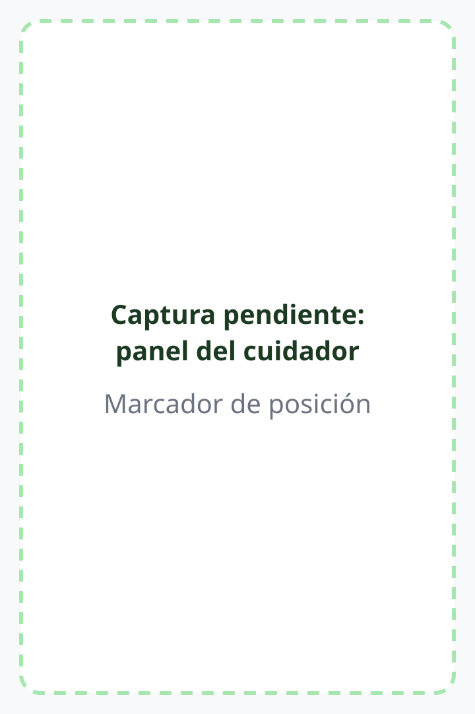
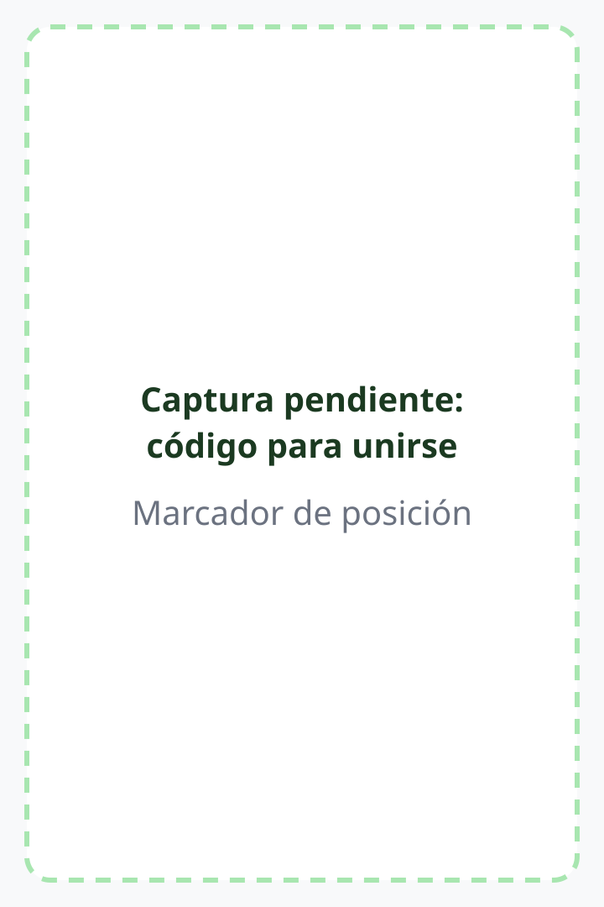
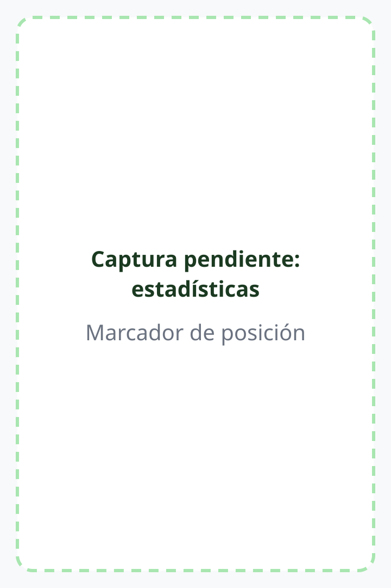
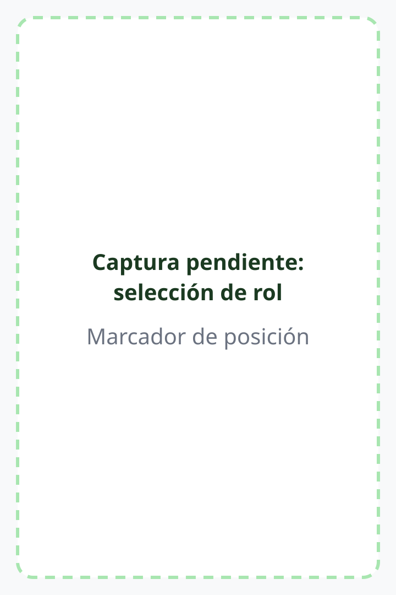
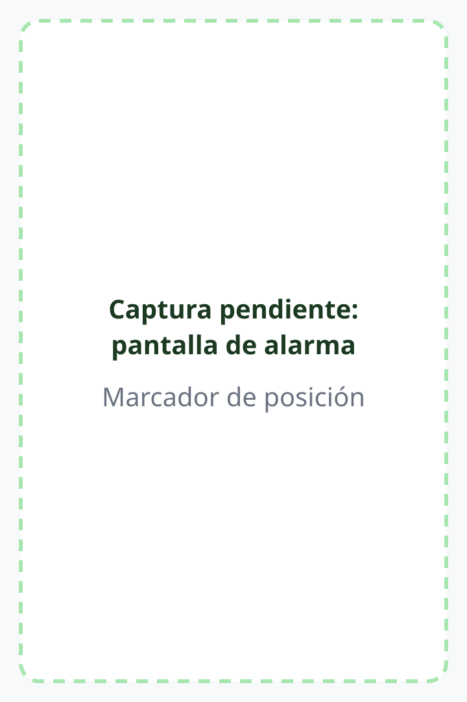

Para el cuidador
Agrega pacientes, crea tratamientos, comparte el código y revisa el historial, el horario y las estadísticas de cada persona que cuida.
Pastillero familiar
Una app para que el cuidador organice los medicamentos y el paciente reciba alarmas claras para tomar sus dosis.
Pensada para personas con deficiencia cognitiva leve o moderada y para quien las cuida. El cuidador arma el plan; el paciente solo tiene que confirmar cuando suena la alarma.
MediPlan es un pastillero familiar. El cuidador crea la ficha del paciente, carga sus tratamientos y define los horarios. El paciente recibe una alarma en su celular y confirma cada toma con un toque.
La app separa dos roles. El cuidador entra con una cuenta. El paciente no tiene cuenta: se vincula una sola vez con un código y queda asociado a ese teléfono.
Agrega pacientes, crea tratamientos, comparte el código y revisa el historial, el horario y las estadísticas de cada persona que cuida.
Ve sus medicamentos del día, recibe alarmas y confirma con “YA”. También puede posponer con “Recordar” si necesita unos minutos más.
Agrega el nombre, el medicamento, la dosis y los días de la semana en que corresponde cada toma.
Elige “Paciente” y escribe el código MEDI-XXXXXX una sola vez. La app recuerda el vínculo en ese teléfono.
Pulsa “YA” cuando ya tomó la dosis. Si necesita esperar, pulsa “Recordar” y la alarma vuelve en 5 minutos.
En la app, el rol del cuidador se llama “Doctor”. No hace falta ser médico: la cuenta es para quien organiza los medicamentos y acompaña al paciente.
MEDI-XXXXXX y lo muestra en la tarjeta “Código para unirse”.
Importante: la app programa una alarma por cada combinación de hora y día. Si dejas un horario sin días marcados, el editor marca todos los días para no guardar un horario vacío.

La ficha del paciente tiene tres pestañas en la barra inferior. La app abre en “Horario”.

Si un tratamiento lleva 5 días programados sin ninguna toma confirmada, el cuidador recibe una alerta. También aparece una tarjeta roja con el texto “5 días sin tomas” en el detalle del paciente.
Ojo: si el paciente nunca abre la app, el aviso push puede no salir. La tarjeta del cuidador sí se calcula al abrir el detalle del paciente.
El paciente no puede desvincularse solo: esa acción la hace el cuidador.
En la pantalla inicial, el botón “Paciente” tiene la descripción “Tomo mis medicinas”. Ese es el camino del paciente.

MEDI-XXXXXX y pulsa “Unirme”.Después de vincularse, la app recuerda el vínculo. Al volver a abrirla verás “Continuar como paciente” y “Usar otro código”.
Cuando llega la hora, la app muestra la foto del medicamento si la cargaste, la dosis y el nombre. También intenta abrirse a pantalla completa.
Pantalla completa: si el celular está desbloqueado y en uso, Android puede mostrar un aviso en lugar de abrir la alarma a pantalla completa. La alarma sigue estando; toca el aviso para abrirla.

La alarma principal se repite cada semana en los días que marcó el cuidador.
La alarma tiene una pista que dice “Desliza para ver más”. Al bajar encuentras:
Las alarmas se programan en el teléfono. Si Android las bloquea, la toma no suena. Revisa estos puntos, sobre todo la primera vez.
Cuando abras la app, Android puede pedir permiso para mostrar notificaciones. Acepta. Si lo rechazaste, entra a Ajustes del teléfono, busca MediPlan y activa las notificaciones. Sin este permiso no se ven las alarmas.
En Ajustes, busca MediPlan y entra a “Alarmas y recordatorios” o “Alarmas exactas”. Si el teléfono muestra esa opción, déjala activa. El nombre cambia según la marca y la versión de Android.
La alarma sube el brillo de la pantalla al máximo. La primera vez, Android abre la pantalla “Modificar las configuraciones del sistema”. Activa MediPlan ahí. Si no lo haces, la alarma sigue sonando, pero sin el brillo extra.
El ahorro de batería puede retrasar o cortar las alarmas. Busca MediPlan en los ajustes de batería y elige “Sin restricciones” o “No optimizar”.
Evita “Forzar detención” sobre MediPlan: cancela las alarmas programadas. Si el teléfono está en “No molestar” o en silencio, el sonido puede no escucharse.
Celular desbloqueado y en uso: Android puede mostrar un aviso en lugar de abrir la pantalla completa de la alarma. Es normal. La alarma sigue activa y se abre al tocar el aviso.
Las alarmas ya programadas suenan sin internet. Para confirmar una toma y que el cuidador la vea, hace falta conexión. Si no hay red, el registro puede quedar pendiente hasta que vuelva la conexión.
El cuidador debe pulsar “Desvincular dispositivo” en el detalle del paciente. Después instalas la app en el teléfono nuevo, eliges “Paciente” y escribes el mismo código.
Porque ese código ya está asociado a otro teléfono. Pide al cuidador que lo desvincule y vuelve a intentarlo. El mensaje completo es: “Este código ya está vinculado a otro dispositivo. Pide al cuidador que lo desvincule.”
En la pantalla inicial pulsa “Usar otro código” y escribe el código del nuevo paciente. La app muestra el último paciente vinculado en ese teléfono. Si vas a usar el paciente anterior en otro celular, el cuidador debe desvincularlo primero.
No. El paciente entra como usuario anónimo y se identifica con el código que le da el cuidador. No tiene correo ni contraseña.
La app lo marca “Finalizado” y cancela sus alarmas. El historial de tomas anteriores se conserva. Si el tratamiento es “Continuo”, no se finaliza solo.
Revisa, en este orden: el permiso de notificaciones, las alarmas exactas, el ahorro de batería y el modo “No molestar”. También confirma que el día de hoy esté marcado en el horario y que el tratamiento no esté finalizado. Si el teléfono estaba apagado a esa hora, la alarma no suena.
El cuidador ve los pacientes que creó. El paciente ve los datos del paciente al que está vinculado. Otros cuidadores no pueden leer el perfil, los tratamientos ni las tomas de un paciente ajeno. El índice de códigos (código e identificador del paciente) sí lo puede leer cualquier sesión autenticada, pero no contiene datos clínicos. La app no tiene un panel de administración.
No. Esta versión funciona en Android. No hay una versión para iOS.
No. MediPlan organiza recordatorios y registros. No diagnostica, no ajusta dosis y no reemplaza la indicación de un médico.
Esta sección describe lo que la app guarda y lo que permiten las reglas de la base de datos. No prometemos cifrado propio ni garantías que no estén en el código.
MEDI-XXXXXX con el identificador del paciente.| Acción | Cuidador | Paciente |
|---|---|---|
| Crear pacientes | Sí | No |
| Crear, editar y borrar tratamientos | Sí, de sus pacientes | No |
| Ver tratamientos e historial | Sí, de sus pacientes | Sí, del paciente vinculado |
| Ver estadísticas | Sí, de sus pacientes | No |
| Confirmar o posponer una toma | No desde la app | Sí |
| Desvincular el teléfono | Sí | No |
| Leer los datos de un paciente de otro cuidador | No | No |
MediPlan no es un dispositivo médico. No diagnostica, no ajusta dosis y no reemplaza la indicación de un médico. Si hay una duda sobre un tratamiento, consulta con un profesional de la salud.
Proyecto académico de la UTS.
Equipo: [David Steven Patiño Rueda]
Contacto: [dspatino@uts.edu.co]
Hecho con Flutter y Firebase.
Marcadores pendientes de completar antes de publicar: nombres del equipo y correo de contacto.
Esta página no usa cookies, analíticas ni recursos externos. Las fuentes son las del sistema.